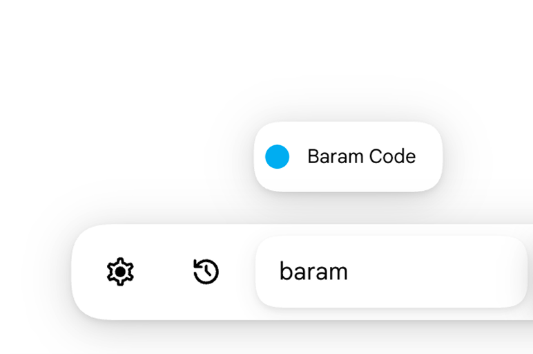
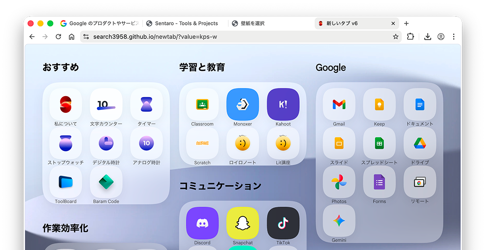

キーボード入力からも高速にアクセスできます。

設定するだけですぐに使用できます。

時計モードが追加されています。壁紙にはブラーが施されましたので視認性が向上しました。その他バグ修正も含まれます。
V5時代を思い出させるグリッドレイアウトです。角には丸みが与えられ、柔らかい印象になりました。
軽いです。早いです。シンプルです。多言語対応しました。Windows11みたいです。でもiOSのように柔らかい印象です。以上です。
不要な機能を削りとにかく軽量にしました。そのおかげでスピードテストでは100%のスコアを獲得し，最速アクセス速度は0.09秒を記録しました。それでも美しく，便利な機能は維持しています。
v5.2でパフォーマンスの問題が発生したのでそれの修正版です。v5.1をベースに，デザインだけv5.2を使用しました。ただ，同期機能はなくなっています。
とにかく洗練されたデザインになりました。ログインできるようになり，履歴の同期が可能になりました。アニメーションも滑らかで美しいものに変更されました。
検索ボックスはメタボールになり美しいアニメーションが再生されます。他にもカード機能が追加され、大幅に見た目、機能面でアップデートされました。
デザイン面で大幅に進化しました。よりシンプルで直感的な操作が可能になっています。グリッドレイアウトが大幅に改善され、もっと使いやすくなっています。
7.27アップデート。読み込み速度が向上しました。新たにグリッドレイアウト、拡張機能が追加されました。直接URLにアクセスする機能も復活しました。
Liquid Glassデザインを採用しながら、独自デザインも採用しています。また、シュートカットは正方形になり、小さい画面でも表示できる量が増えました。
WinUI3のようなデザインを採用して、よりモダンなデザインになりました。特にWindows 11標準アプリにとてもよく馴染むデザインです。
v2.1の新しいタブをベースに高速化しています。Chromeデフォルトのタブのようにショートカットは右上のボタンで表示できるようにしました。
OneUI 7らしいデザインを採用しました。また、ウィジェット・AI検索機能も追加され、機能面でも大幅にアップグレードし使いやすくなりました。
今回のデザインはかなりiPadOS 18やtvOSの影響を受けています。大きな変更点は、Material3ライクなデザインではなくなったことです。
v2.1の新しいタブをベースに再デザインしています。Elementalはthinkingグループのデザインで、この特別版ではそのデザインになっています。
背景に画像を設定できる機能、検索エンジン機能が追加されました。そして、今回新たにスクロールしてショートカットを表示する形式になりました。
サイト全体を再構築し、コードを簡素化し読み込み速度が大幅向上しました。履歴機能追加、UI改善、アニメーション強化、一部デザイン変更なども含まれます。
この時から、周りの人が使い始めました。Newtabを多くの人に使ってもらいたいため、無料で公開しています。これがNewtabの始まりです！
よく使うサイトへすぐアクセスするために作られました。この時はまだ自分しか使っていません。これがNewtabの本当に0の状態からの最初のバージョンです。
授業のあまり時間に短時間で作ったものです。まだ何もなく、結局このコードは使わなかったですが、このアイデアをもとにNewtabの開発を始めました。
本当にNewtabの考えが始まった一番最初です。まだ私が小学生の時に作ったものです。ただ、Newtabの開始はこの3年後ほどです。